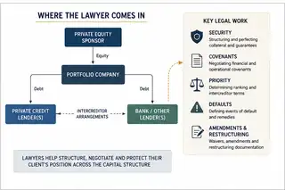

CORPORATE FINANCE · PRIVATE MARKETS · LEGAL WORK · 3 OCTOBER 2026
The Rise of Private Credit
How Alternative Lending Is Reshaping Corporate Law and Finance

Introduction
For decades, the corporate finance model was relatively straightforward and, for the most part, uniform. Essentially, companies in need of additional funds would receive loans from established banks that would charge them an interest rate based on benchmark interest rates, as well as any specific risk factors determined on a case-by-case basis. However, in recent times, a landmark development has entered the corporate financing space, namely private credit.
In fact, private credit has not only entered the market, but has become an increasingly important source of corporate financing. The Federal Reserve estimated that private credit loans in the US amounted to approximately $1.4 trillion in the second half of 2025, representing around 10% of total US non-financial corporate debt. Globally, the Bank of England has also noted the significant growth of private credit and private equity, with these markets growing from around $3 trillion to approximately $11 trillion over the past decade.
This article will discuss private credit generally, outline why its importance has grown so radically over the past 20 years, and discuss its repercussions on legal work.
Private credit has become a significant source of corporate financing.
MARKET SCALE
The Federal Reserve estimated that private credit loans in the US amounted to approximately $1.4 trillion in the second half of 2025, representing around 10% of total US non-financial corporate debt.

What is Private Credit?
In its simplest form, private credit is lending in which companies receive loans from non-bank lenders. Unlike traditional bank lending, these loans are generally negotiated privately and directly between the borrower and lender. Because private lenders provide the credit, loan terms can be negotiated on a case-by-case basis. Moreover, the interest rate is usually higher than that of a traditional bank loan, reflecting the risk, structure and flexibility of the financing, although the precise rate will depend on the individual transaction and prevailing benchmark rates.
Typical lenders in private credit include asset managers, private credit funds, insurance companies and other institutional investors. Crucially, these lenders operate under a different regulatory framework from commercial banks, allowing them to provide credit in ways that may not be available to traditional banks.
For instance, there is a higher level of privacy and discretion, as these loans are not publicly issued, listed or traded on public stock or bond exchanges. There is also much more flexibility because borrowers can receive bespoke loan structures that are tailored to their specific needs. Private credit can also allow companies to obtain financing where traditional banks may have less appetite to lend, particularly where the borrower is highly leveraged, operationally complex or requires a more flexible financing structure.
Private credit, therefore, provides various benefits, but can also be quite risky. For investors, these investments can potentially provide higher returns and steady cash flow without over-reliance on public markets. However, they are generally illiquid and can involve significantly less transparency than publicly traded forms of credit. This means that an investor in this type of credit would need to have a significantly higher risk appetite.
It is also important to note that private credit does not necessarily mean unsecured lending. Private credit loans can be secured against assets such as shares, receivables or property, or can be supported by guarantees and other contractual protections. The defining feature is primarily that the lending is privately negotiated and provided by non-bank lenders, rather than the particular form of security used.

Traditional bank lending and private credit can differ in lender type, negotiation, leverage and documentation.
So Why Has Private Credit Grown So Much in the Last 20 Years?
1. Stricter lending regulations for banks in the years after the financial crisis versus the flexibility of private credit
One of the most important reasons private credit has gained so much importance is the change in the banking sector following the 2008 global financial crisis.
The basis of the 2008 crisis was that banks across the globe had taken on significant risks, particularly through lending connected to the US housing market. When the housing bubble burst and borrowers began defaulting, the banking sector took a significant hit. The result was a major international effort to strengthen banking regulation.
Importantly, the Basel Committee on Banking Supervision was not created after the 2008 crisis. It was established in 1974. However, the crisis exposed significant weaknesses in the existing regulatory framework and contributed to the development of Basel III, which introduced stronger international standards for banks.
Basel III was essentially concerned with improving banks' capital reserves, ensuring they did not take on too much risk and making sure they had enough liquidity in times of economic stress. Banks in the UK and US, for example, were required to hold stronger and higher-quality capital reserves to act as a cushion in times of economic stress. They also faced greater constraints on how much risk they could take relative to their capital reserves, alongside stronger liquidity and stable funding requirements.
With all of these changes, banks became subject to a more demanding regulatory framework when assessing the risks associated with lending. Private credit, meanwhile, operated outside the traditional banking system and could therefore offer financing with different risk tolerances and structures.
The global financial crisis therefore did not lead to the creation of private credit per se, but it certainly increased its importance. As banks became more constrained in the risks they could take, non-bank lenders were able to occupy parts of the market where traditional bank lending was less suitable.
2. Private credit fills a general demand for credit
Apart from the regulatory environment, the economic reality is that there is not necessarily enough suitable credit for every company that needs it.
Banks have to carefully consider the risk associated with every loan they make. Small and medium-sized companies can be more difficult to lend to because they may be less established than larger corporations, have less predictable cash flows or have fewer assets that can be offered as security. Banks therefore have to limit how much of this type of risk they take on.
This creates an opportunity for private credit.
Private credit lenders can be more willing to provide financing to companies that require more flexible terms or present a risk profile that may be less attractive to a traditional bank. The Bank of England has noted that private credit funds can offer higher leverage, bespoke loan terms and faster underwriting processes, making them particularly suitable for highly leveraged, lower-rated or operationally complex businesses.
This flexibility is particularly important because companies do not all have the same financing needs. One company may require a simple loan at the lowest possible interest rate. Another may prioritise speed, certainty of execution, a higher level of leverage or a financing structure tailored around a particular acquisition.
Private credit can therefore fill a gap between what a company wants and what a traditional bank is prepared to provide.
3. The expansion of private equity and institutional capital
Another major reason for the growth of private credit is the expansion of private markets themselves, particularly private equity.
Private equity transactions frequently involve significant amounts of debt. When a private equity sponsor acquires a company, the acquisition is often financed through a combination of equity from the sponsor and debt from lenders. As private equity has grown, so too has the demand for flexible forms of acquisition finance.
This has created a natural relationship between private equity and private credit. A private equity sponsor may require a financing structure that allows it to complete an acquisition quickly, obtain a particular level of leverage and negotiate terms suited to the company being acquired. Private credit lenders can be well positioned to provide this type of financing.
At the same time, institutional investors have increasingly allocated capital to private markets. Private credit can provide investors with exposure to loans and the income generated from them, while private credit funds can deploy that capital into corporate lending.
The scale of this market has become significant. The Bank of England reported in September 2026 that global private markets had reached approximately $16 trillion in assets under management, with private equity and private credit growing from around $3 trillion to approximately $11 trillion over the previous decade.
This demonstrates that the growth of private credit is not simply a temporary response to conditions in the banking sector. It is part of a much broader expansion of private markets and institutional capital.
Four forces have contributed to the growth of private credit.

4. The interest-rate environment
Interest rates have also played an important role in the development of private credit.
Following the 2008 global financial crisis, interest rates remained historically low for an extended period. This created difficulties for investors seeking higher returns from traditional fixed-income investments and increased interest in alternative sources of yield.
Private credit could offer investors higher returns in exchange for accepting greater credit risk and illiquidity. This helped attract institutional capital towards private credit funds and contributed to the expansion of the market.
However, the relationship between private credit and interest rates is more complicated than simply saying that private credit became popular because rates were low. Private credit loans are often floating-rate, meaning the interest paid by borrowers can rise as benchmark rates rise. The Bank of England has noted that this can increase debt-servicing pressures for leveraged borrowers.
This also demonstrates why private credit has remained important even as the interest-rate environment has changed. Its appeal is not based solely on the level of interest rates, but also on the flexibility, speed and bespoke nature of the financing it provides.
What Does Private Credit Mean for Lawyers?
Private credit has not only changed the structure of the corporate financing market, but it has also changed the legal work surrounding that financing.
Before its rise, law firms generally treated private credit as another section of finance work. But now, private credit has become a major source of legal work alongside traditional banking. Some private equity and M&A transactions increasingly use private credit as their financing source, particularly when bespoke structures, discretion, speed, certainty and flexibility are the main priorities.
The result is that law firms have increased their investment in private credit practices by recruiting talent to meet client needs and developing private credit as a specialisation rather than simply treating it as a section of another practice area.
Private credit has also changed the job of a corporate lawyer. For example, because private credit is more bespoke than a standard bank loan, lawyers have to understand the commercial mechanics behind their client's reason for borrowing. They need to ask questions such as why the debt is being raised, how leveraged their client is, how much flexibility is needed and what their client wants to protect, and use this information to draft the terms in a commercially sensible manner that meets the client's objectives.
Their commercial acumen is also tested heavily because lawyers increasingly have to work across the capital structure. Private credit may exist alongside other forms of financing, and this means that a lawyer needs to understand how different creditors' rights interact with each other.
Connected to this is the documentation that lawyers now have to prepare. In the past, there was a fairly standardised bank financing package, but with private credit, terms and conditions can differ heavily between clients. Lawyers now have to negotiate terms such as financial covenants, security, events of default and intercreditor agreements on behalf of their clients. For each client, different elements of the deal will need to be prioritised.
In drafting these documents, lawyers are also expected to be speedy and efficient, as one of the attractive parts of private credit is the speed at which financing can be secured. In some ways, therefore, a lawyer's job has become far more complex because of the amount of specificity, efficiency and speed each transaction requires.
Finally, legal work now requires significant focus on downside protection. Because private credit lenders often lend to more highly leveraged companies, lawyers have to spend a large amount of time considering what happens if things go wrong.
For example, a lawyer may need to make provisions for what happens if a borrower breaches a covenant, or ask whether a borrower can realistically take on more debt or refinance in the event of default. They also have to navigate around other lenders who have rights against that particular borrower.
This is particularly important where different forms of financing exist within the same capital structure. Lawyers may have to determine which creditor has priority, what security each lender holds and what happens if the borrower defaults.
Connected to this is the potential for more restructuring and amendment work. If a borrower defaults or begins experiencing financial difficulties, the lender may have significant influence over what happens next. Lawyers may therefore have to draft covenant waivers, amendments and refinancing documents, or negotiate between different creditor groups.
In this way, private credit not only creates work when the financing happens, but also when things go wrong.

Conclusion
Private credit has moved from being a relatively specialised form of financing to becoming an important part of the corporate credit market. Its growth has been driven by several factors, including changes in the banking sector after the financial crisis, demand for more flexible financing, the expansion of private equity, increasing institutional investment and changing interest-rate conditions.
For corporate lawyers, the importance of private credit goes beyond simply having another type of financing document to work with. Its bespoke nature means lawyers increasingly need to understand how a transaction works commercially, how different forms of debt interact and how their client's position can be protected if the transaction does not go according to plan.
Private credit is therefore not simply changing who lends money to companies. It is changing how corporate finance is structured, negotiated and legally documented.
Sources
Federal Reserve, Financial Stability Report, May 2026
Federal Reserve Financial Stability Report
Bank of England, Financial Stability Report, July 2026
Bank of England Financial Stability Report
Bank of England, Financial Policy Committee Record, September 2026
Bank of England Financial Policy Committee Record
Bank for International Settlements, Basel Committee standards
Basel Committee standards